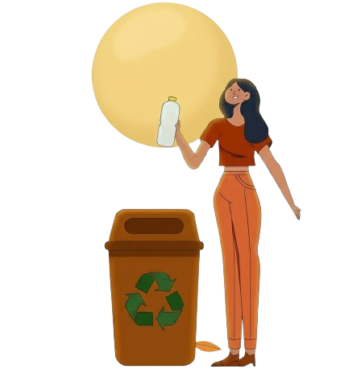

Bem-vindo ao EcoCiclo
Monitoramento inteligente para coleta eficiente. 🌱♻️
Tecnologia para uma Coleta Sustentável
Sistema Inteligente
O EcoCiclo é um sistema inteligente de gestão e coleta seletiva de resíduos, desenvolvido para tornar o descarte de materiais recicláveis mais eficiente e sustentável.
Monitoramento em tempo real
Sensores acoplados aos recipientes monitoram o nível de preenchimento e enviam alertas automáticos, permitindo a otimização da coleta e redução de desperdícios.

Pontos de coleta
O sistema disponibiliza um mapa interativo com pontos de coleta para plástico, papel, metal, vidro e óleo, facilitando o descarte correto e consciente.
Engajamento sustentável
O EcoCiclo promove a participação ativa de pessoas, comunidades e instituições, contribuindo para cidades mais limpas, responsáveis e sustentáveis.
Participe do EcoCiclo
Empresas, instituições e prefeituras: juntem-se a nós para otimizar a coleta de recicláveis e promover cidades mais limpas e inteligentes.
Empresas & Condomínios
Instale sensores nos recipientes de coleta seletiva e monitore em tempo real a ocupação, otimizando custos e logística.
Escolas & Universidades
Incentive a educação ambiental, engajando alunos e funcionários na separação correta de resíduos.
Prefeituras & Órgãos Públicos
Gerencie os pontos de coleta em tempo real, planeje rotas eficientes e melhore a coleta seletiva em sua cidade.
Cuide do Meio Ambiente
Pequenas ações hoje geram grandes mudanças amanhã.
Recicle, reutilize e faça a diferença!